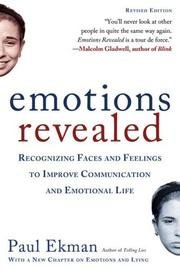

Emotions Revealed: Recognizing Faces and Feelings to Improve Communication and Emotional Life
Book·Paul Ekman, 2003·情绪的解析

Starting from his research on facial expressions, Ekman discusses basic emotions, microexpressions and methods for recognizing emotion.
- Author
- Paul Ekman
- Year
- 2003
- Difficulty
- Beginner
- Kind
- Overview
- Schools
- Affective Neuroscience
- Core theories
- Basic Emotions
Editions
- Chinese edition 《情绪的解析》 [美] 保罗·艾克曼 · tr. 杨旭 · 南海出版公司 · 2008 Douban 8.1 (1075 ratings) Douban page ↗
- English edition Emotions Revealed: Recognizing Faces and Feelings to Improve Communication and Emotional Life Paul Ekman · Second edition, Henry Holt (Holt Paperbacks) · 2007 Open Library ↗